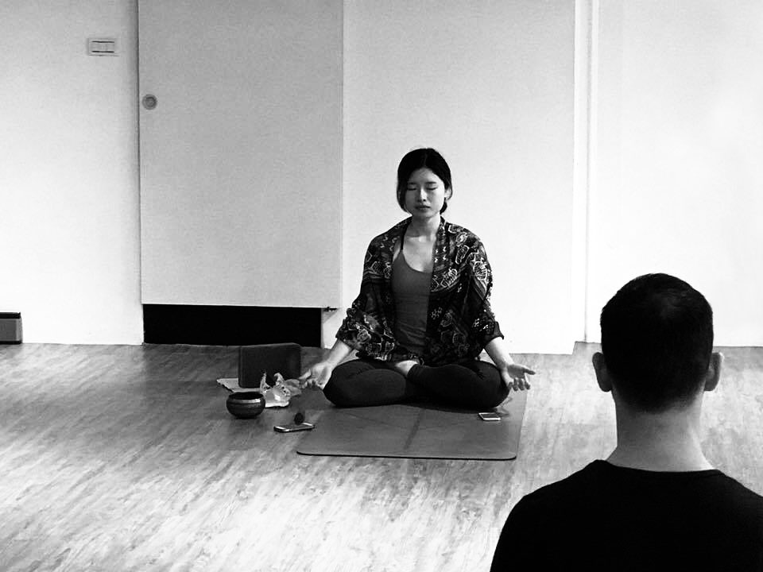
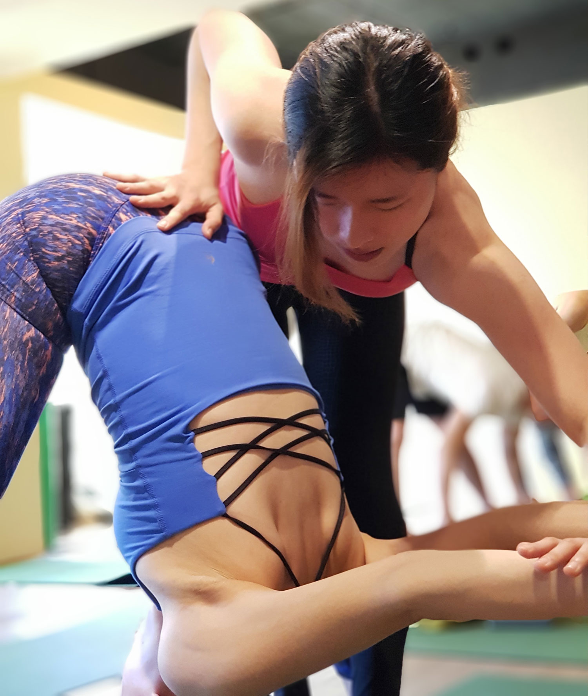
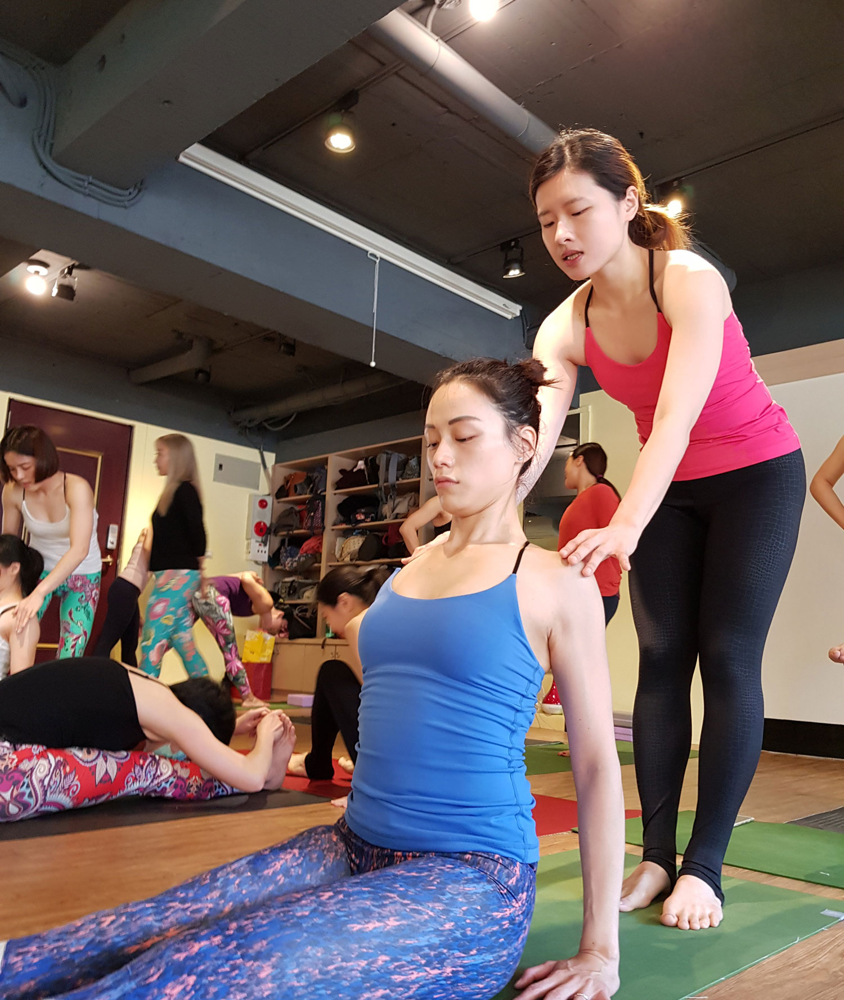

Yoga for Connection,
Mindfulness,
and Healing.
Initially began practicing yoga to relieve stress and balance in the hectic life, Yoga has since connected me to my inner strength and spirit. Inspiring by the healing power of Yoga, I completed my first teacher training in spring 2018 and began teaching. I love learning and continue to deepen my studies through trauma-sensitive and therapeutic yoga practices.
Committed to Being a Lifelong Student of Yoga.
- Obtain 200 hrs (Registered Yoga Teacher) certification by the Yoga Alliance on Ashtanga Vinyasa yoga emphasis.
- Lead vinyasa flow classes that include elements from different traditions from Hatha, Ashtanga to Yin.
- Value mind/body connection, and mindful observation of stillness and movement.
- Utilize guided meditation and breathwork to integrate mind, body, and spirit.


Ongoing Training in Trauma-Sensitive Yoga Practices.
- Nityda Gessel, Yoga for Attachment Repair and Trauma Resolution: Embodiment and Polyvagal Theory Webinar, December 2018, The Trauma-Conscious Yoga Institute.
- Malabika Das, Integrative Body-Mind-Spirit: Yin Yang Yoga Workshop, December 2018, Department of Social Work at NTU, Taipei, Taiwan.
- Jun Lee, Yoga Blessing: Pain and Fear Charity Workshop, Fundraising for WARM (Women Anonymous Reconnecting Mentally), June 2018, Taipei, Taiwan.
- Sean Cheng, “Self-Myofascial Release Technique (SMRT) 2-Day Workshop“, March 2018, Taipei, Taiwan.